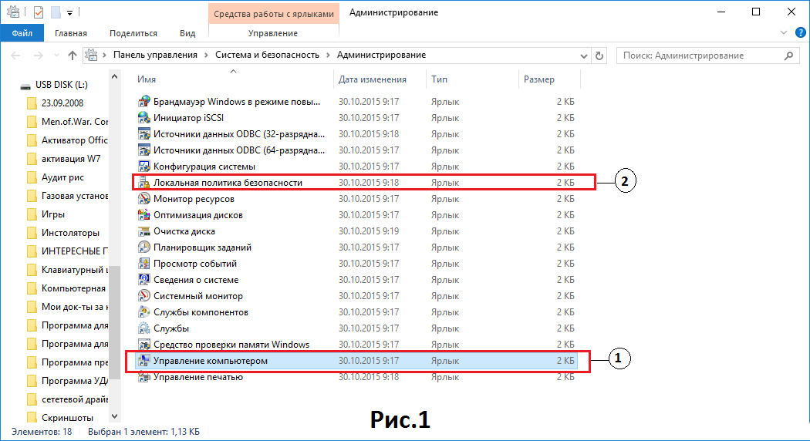
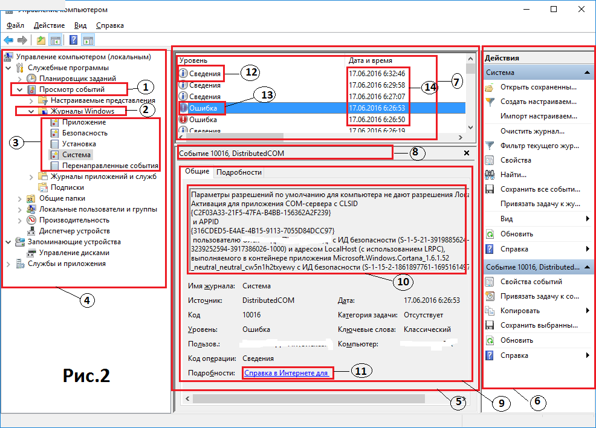
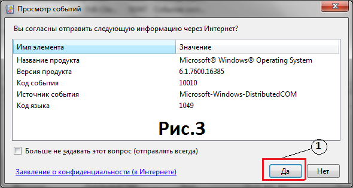

Аудит операционной системы семейства Windows – это процесс, предназначенный для обнаружения и регистрации событий, происходящих в системе, для проведения последующего анализа. Система аудита, встроенная в ОС Windows, позволяет фиксировать большинство событий, происходящих в ней, а сами события регистрируются в специальных журналах Windows. Следует отметить, что информация, которая регистрируется в вышеуказанных журналах, порядок настройки регистрируемых параметров и порядок анализа событий, происходящих в системе, зависят от типа операционной системы. Например, для операционных систем Windows XP фиксация событий, влияющих на безопасность системы, возможна только после активации хотя бы одного из параметров, подлежащих контролю. А в более поздних вариантах операционных систем некоторые события безопасности регистрируются постоянно, независимо от настроек аудита.
Типы событий операционных систем
В операционных системах семейства Windows существует несколько журналов, в которые записывается большинство событий, происходящих в системе. При этом некоторые события записываются автоматически, а регистрацию других (в основном, касающихся безопасности системы) необходимо активировать и настраивать. Событиями можно назвать любые изменения состояния операционной системы. К ним относятся запуск системы (компьютера), вход в систему любого пользователя, любые процессы, запускаемые или отключаемые в операционных системах, попытка доступа к системным файлам и защищенным файлам реестра и многое другое. События подразделяются на типы, к которым относятся: а) информация, б) предупреждение и в) ошибка. Кроме этого, существуют еще такие события, как «Успешный аудит» и «Неуспешный аудит». Последние два типа событий предназначены для специалистов, обеспечивающих контроль безопасности системы, и в данной статье будут рассмотрены только в части, касающейся активации параметров «Журнала безопасности Windows».
События типа «Информация» (еще этот тип событий называется «Сведения») отображают факт успешной операции. Этим событиям соответствует пиктограмма в журнале событий в виде кружочка с буквой «i» внутри кружочка (см.12 Рис.2). Справа от пиктограммы текстом отображается тип события «Сведения».
Событие типа «Предупреждение» отображает некоторые проблемы, имеющие место в работе операционной системы. Данное событие свидетельствует о незначительной проблеме в работе системы (приложения) и не требует немедленного вмешательства пользователя, но регулярное появление одного и того же события может со временем привести к ошибкам. Этим событиям соответствует пиктограмма в журнале событий в виде желтого треугольника с восклицательным знаком внутри (не показано). Справа от пиктограммы текстом отображается тип события «Предупреждение».
Событие «Ошибка» отображает проблемы, которые могут привести к потере работоспособности системы или потере информации. Этим событиям соответствует пиктограмма в журнале событий в виде красного кружочка с восклицательным знаком внутри кружочка (см.13 Рис.2). Справа от пиктограммы текстом отображается тип события «Ошибка».

Журналы событий и их включение
Как уже отмечалось выше, все события регистрируются в специальных журналах. Чтобы запустить любой из журналов, необходимо воспользоваться утилитой «Администрирование» из панели управления. Для этого необходимо последовательно нажать кнопки Пуск\ Панель управления\ Система и безопасность\ Администрирование, и перед вами откроется окно Рис.1. В случае с Windows XP вам необходимо запустить Панель управления, перейти к классическому виду отображения Панели управления и из перечня утилит выбрать «Администрирование». Если вы обладатель ОС Windows 10, воспользуйтесь кнопкой «Поиск», с последующим введением в поле поиска поискового слова «Администрирование». В любом случае, результатом ваших действий должно быть открытие окна Рис.1. Чтобы открыть необходимый вам журнал, вы должны выбрать оснастку «Управление компьютером» (см.1 Рис.1), после чего перед вами откроется окно Рис.2.

В окне Рис. 2 откройте вкладку «Просмотр событий» (см.1 Рис.2). Выберите «Журналы Windows» (см.2 Рис.2) и в открывшемся перечне существующих журналов (см.3 Рис.2) выберите тот, который вас интересует. Но, если вы пытаетесь найти причину проблемной работы вашего ПК, вам наверняка придется анализировать все журналы.
Существует три основных журнала, в которые записываются наиболее важные события. Это: а) Система, б) Приложения и в) Безопасность. Кроме этого, есть еще и такие журналы, как «Установка» и «Перенаправленные события» (см.3 Рис.2). Названия вышеуказанных журналов отображают события, которые в них фиксируются (системные события, события приложений и т.д.).
Все события, имевшие место на вашем компьютере, записываются в ключе реестра HKEY_LOCAL_MACHINE\SYSTEM\CurrentControlSet\Services\EventLog, который имеет подключи, соответствующие имеющимся журналам (Система, Безопасность и т.д.). А это значит, что пользователь ПК имеет возможность создавать новые журналы, адаптированные под его запросы.
И еще несколько слов об окне Рис.2. При открытии любого из журналов событий Windows, окно делится на три вертикальных подокна. Первое (левое) подокно (см.4 Рис.2) служит для выбора соответствующего журнала. Второе (среднее) подокно (см.5 Рис.2) служит для анализа событий. И третье (правое подокно) содержит набор органов управления для выполнения определенных действий со стороны пользователя компьютера. Среднее окно (см.5 Рис.2) является основным источником проведения анализа.
Анализ событий в операционных системах Windows
Если на вашем ПК периодически проявляются сбои, то эти факты однозначно должны послужить причиной проведения анализа. Если же внешних проявлений сбоев не отмечается, то пользователям все равно периодически необходимо открывать журналы событий и оценивать их с целью выявления повторяющихся ошибок и предупреждений, т.к. эти ошибки могут привести к полному отказу вашего компьютера. Кроме этого, Журнал безопасности может помочь вам выявить случаи злонамеренных или неумышленных, но опасных действий пользователей, имеющих доступ к вашему ПК.
Все события, зарегистрированные в соответствующем журнале, отображаются в среднем вертикальном подокне (см.5 Рис.2), которое делится на три горизонтальных части. В верхней части отображается перечень зафиксированных событий (см.7 Рис.2). Под ней расположен раздел с информацией о коде события и источнике события (см.8 Рис.2), а ниже – детальная информация о событии с его описанием, если оно есть в перечне событий Windows.
Как отмечалось выше, основными событиями являются Информация (Сведения) (см.12 Рис.2), Предупреждения и Ошибки (см.13 Рис.2). Событие типа «Предупреждение» не показано на Рис.2, но внешний вид его детально описан в начале статьи.
Для проведения анализа событий, имевших место на вашем ПК, необходимо открыть соответствующие журналы событий и найти события, которые предшествовали неустойчивой работе (сбоям) компьютера. При этом делается привязка по времени внешнего проявления неустойчивой работы (сбоя) компьютера и событий, зафиксированных в Журналах событий. Если все зафиксированные в Журналах события четко привязываются к системному времени (см.14 Рис.2), то внешнее проявление (сбой, зависание и т.п.) вам необходимо зафиксировать самостоятельно.
Если неустойчивой работы ПК не отмечалось, то целесообразно просто просмотреть события за определенный период во всех имеющихся журналах.
Среди зафиксированных системой событий необходимо искать в первую очередь события типа «Ошибка». Что касается событий типа «Информация» («Сообщение»), то обычному пользователю нет смысла анализировать эти события, т.к. они информируют об успешном выполнении какой-либо задачи. К примеру, успешный переход системы в режим «Сон», выход из режима «Сон» и т.п. Но, если у кого-нибудь возникнет желание или необходимость, он сможет самостоятельно выбрать событие типа «Информация», выделить его и посмотреть его описание в разделе с детальной информацией (см.9 Рис.2).
Итак, как вы, наверное, уже догадались, выделение любого события из списка событий (см.13 Рис.2) приводит к появлению соответствующей информации в разделах «Код события» (см.8 Рис.2) и «Детальная информация о событии» (см.9 Рис.2). Вам только остается внимательно изучить эту детальную информацию и, в первую очередь, текстовую информацию в подокне «Описание события» (см.10 Рис.2). Но, если этой информации недостаточно и вам не понятно, что вы должны предпринять, то воспользуйтесь кнопкой «Справка в Интернете для…» (см.11 Рис.2).
Примечание: В разных операционных системах кнопка «Справка в Интернете для…» (см.11 Рис.2) может называться по-другому. В Windows 7 эта кнопка называется «Веб-справка журнала».

После нажатия на кнопку «Справка в Интернете для…» (см.11 Рис.2) система запросит у вас разрешения на отправку в компанию Microsoft информации о вашем событии. Это проявится в появлении окна Рис.3, в котором вам необходимо будет нажать кнопку «Да» (см.1 Рис.3).
После того, как вы нажмете кнопку «Да» (см.1 Рис.3), ваш браузер, установленный по умолчанию, откроет окно на официальном сайте Microsoft, где должно быть описание ошибки и рекомендации об ее устранении. Вот только для операционных систем Windows 10 это не всегда работает, видимо, потому, что для данной системы накоплено недостаточное количество статистического материала. А вот что касается Windows 7, то тут все нормально. Для большинства ошибок есть и описание, и рекомендации.
Теперь несколько слов о журнале «Безопасность». Как я уже говорил, по умолчанию в Windows XP этот журнал не активирован, т.е. в нем не фиксируется ни одно событие. В операционных системах Windows 7 и выше фиксируется несколько событий, причем для разных систем они различны. Чтобы активировать этот журнал для Windows XP или расширить список событий для других систем, необходимо произвести настройку аудита параметров безопасности. Для этого в окне «Администрирование» необходимо выбрать «Локальная политика безопасности» (см.2 Рис.1).
В новом окне Рис.4 откройте вкладку «Локальные политики» (см.1 Рис.4) и выберите «Политика аудита» (см.2 Рис.4), после чего в правой части этого окна у вас появится перечень событий, которые подлежат аудиту (см. 3 Рис.4). Выбрав любое из событий, для которого вы хотите назначить аудит, выполните настройку этого аудита. Вы можете настраивать аудит таким образом, чтобы фиксировались все удачные попытки или только неудачные попытки совершения события («Успех» или «Отказ»). Вы можете задать перечень объектов, доступ к которым ограничен определенным представителям пользователей компьютера. Вы можете включить и настроить аудит отслеживания определенных процессов и многое другое. Единственное, что не следует забывать, так это то, что для настройки параметров аудита безопасности необходимо зайти на компьютер как представитель группы «Администраторы».
И в заключение следует отметить, что, если с вашим компьютером начало происходить что-то непонятное, он стал чаще глючить или еще что-нибудь в этом роде, не спешите удалять недавно установленные программы и драйвера, а просмотрите события, которые предшествуют моментам «глюков» и изучите рекомендации по устранению ошибок. Наверняка, у кого-то была подобная проблема, и этот вопрос изучен представителями компании Microsoft, а рекомендации они выложили на своем сайте. Ну, а если вы пользуетесь лицензионным ПО, то не стесняйтесь обращаться в техподдержку Microsoft. Эти представители честно отрабатывают те деньги, которые вы заплатили за свою операционную систему.